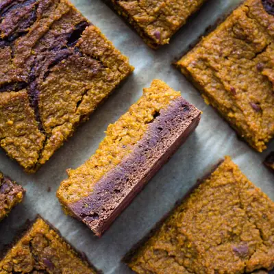

Vegan Pumpkin Brownies

Ingredients
- 15 oz pumpkin purée
- 1/4 cup unsweetened applesauce
- 2 tbsp pumpkin pie spice
- 3/4 cup unsweetened applesauce
- 3/4 cup unsweetened almond milk
- 1 cup organic cane sugar
- 1/2 cup organic brown sugar
- 1 tsp vanilla extract
- 1 1/2 cup whole wheat flour
- 1/2 cup unsweetened cacao powder
- 1 tsp baking powder
- 1/2 tsp salt
Steps
- Preheat oven to 350 F. Combine pumpkin purée, 1/4 cup of applesauce, and pumpkin pie spice. Whisk together, and set aside.
- Combine almond milk, applesauce, vanilla extract, organic cane sugar, and organic brown sugar. Whisk together until combined.
- Combine whole wheat flour, cacao powder, baking powder, and salt. Whisk together to combine.
- Add wet ingredients to dry ingredients. Stir to combine.
- Pour brownie batter into 8x8 inch baking pan lined with parchment paper. Top the brownie batter with the pumpkin pie mixture.
- Bake for 45-55 minutes. Insert toothpick in center to ensure they are fully cooked. Allow to cool completely before removing from the pan and cutting into 9 equal squares.
Recipe by Anjali Shah · The Picky Eater, from The Picky Eater. Saved here for personal use; the original has the full notes, tips and photos. Open original